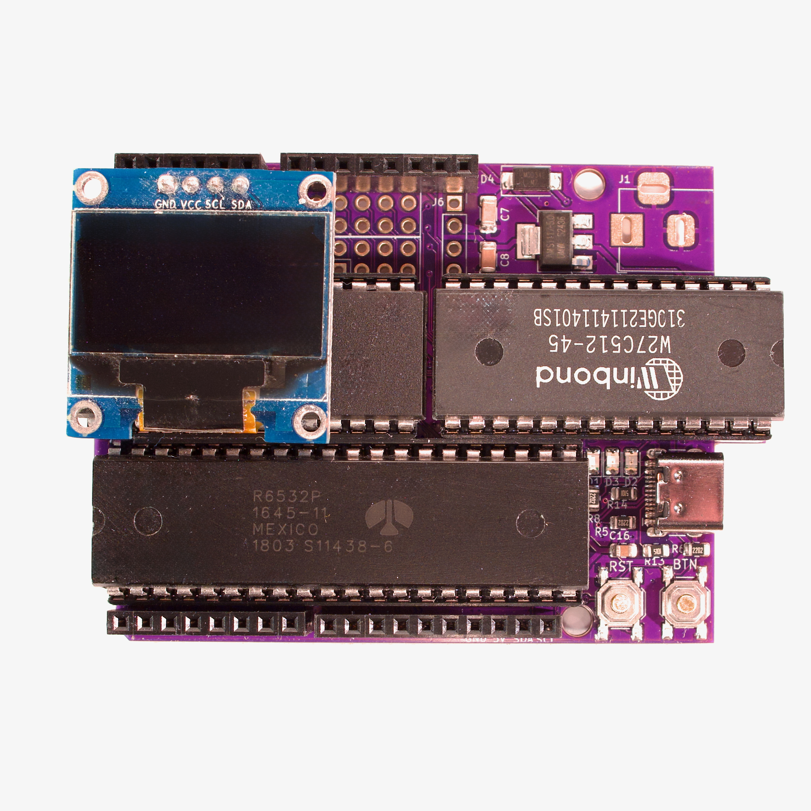

A pocket-sized 6502 lab
Flip the switch.
See the bytes come alive.
Run the real 65uino firmware in your browser. Press its button, watch the OLED, poke the GPIO, and inspect the 6507 as it runs.
6507 CPU6532 RIOT128×64 OLED
01 / Hardware
On the board

The real mounted-board photo is the backdrop; the OLED and buttons are live. Hold BTN to select. The bottom header and GPIO panel let you pull free input pins low.
02 / Controls
Run the machine
Raw 6507 ROM image, 1–65,536 bytes.
03 / Connections
GPIO & peripherals
High Low Driven output
04 / UART
Serial terminal
05 / Under the hood